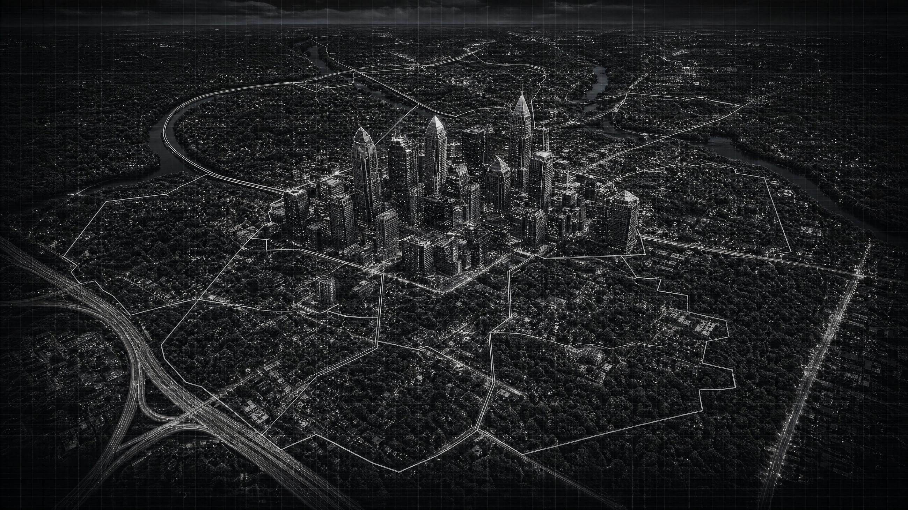

Charlotte, North Carolina
A Gentleman’s
Guide
A banking city that dresses conservatively and negotiates hard. Quiet money, loud weekends. This is a working guide, not a mood board — 75 real, current listings across seven districts, every address and access rule checked before it went on the page.
75 verified listings · Seven districts · Sourced and checked, not invented
The Map
Seven districts.
Each with its own hours, its own dress code and its own reason to go. Select a district and its venues surface as hotspots on the map itself — select a venue, and it opens right here.

Hover or tab across the city · select a venue to open it · full listings below by district
The Guide
75 places
worth knowing.
Not a list of the best places. A list of the right places, organized by district — a client dinner reads differently than a solo coffee, and this is built to tell the two apart.
District 01 of 07
Uptown / Fourth Ward / First Ward
Charlotte’s financial core, where deals get made in daylight and the after-hours rooms sit two blocks from the towers that produced them. Uptown dresses for the office and drinks like it means it — jacket weather, most nights, whatever the season says.
26 listings in this district
No listings here match the current filters.
District 02 of 07
South End / Dilworth / Wilmore
The rail line turned the old warehouses into rooftops and the old mill villages into porches, and South End spends its money loudly while Dilworth spends its more quietly next door. Young and moving fast in one, old shade and slower manners in the other.
8 listings in this district
No listings here match the current filters.
District 03 of 07
Myers Park / Eastover / SouthPark
Willow oaks, long driveways, and the city’s oldest money living quietly behind hedges that don’t advertise. SouthPark next door does the same thing in retail form — a mall economy that exists mostly to justify the steakhouse beside it.
12 listings in this district
No listings here match the current filters.
District 04 of 07
Plaza Midwood / Elizabeth / Belmont
Bungalow porches and big trees give way, block by block, to the loudest patio bars in the county. Elizabeth keeps its manners; Plaza Midwood mostly doesn’t, and the two have learned to share a ZIP code without much friction.
8 listings in this district
No listings here match the current filters.
District 05 of 07
NoDa / Optimist Park / University City
Murals over auto shops, a light-rail line that made the real estate possible, and a live-music crowd that still shows up to actually listen rather than talk through the set. University City sits north of all of it, quieter and thinner on the kind of rooms this guide covers.
9 listings in this district
No listings here match the current filters.
District 06 of 07
Ballantyne / Piper Glen / South Charlotte / Steele Creek / The Palisades
The far south of the county, built almost entirely around golf and corporate campuses — a suburb organized less by streets than by which private club you belong to. Deals close over eighteen holes here more often than they do over dinner.
6 listings in this district
No listings here match the current filters.
District 07 of 07
West Charlotte / Wesley Heights / Camp North End
A former industrial belt turning into the city’s most interesting adaptive reuse, one converted warehouse at a time. Thinner on the tables this guide usually covers, and honestly better for it — the interest here is in what’s being built, not what’s already arrived.
6 listings in this district
No listings here match the current filters.
Verified, not invented.
Every listing here was checked against current sources at the time this page was built — address, hours, access policy, reservation requirements. Where something couldn't be confirmed, the card says so rather than guessing. Confirm anything time-sensitive before you go; hours and policies change.
Cigar lounges and country clubs are marked with their access rules front and center — private, member-guest, day-pass, or public — because getting that wrong at the door is the one mistake this guide is built to prevent.
Price
- $
- Under $20 / person
- $$
- $20 – $45
- $$$
- $45 – $90
- $$$$
- $90+
- Member
- Private-membership or guest-access venue
Access
- Public
- Walk in, no introduction needed
- Reservation Recommended
- Booking advised, walk-ins possible
- Reservation Required
- No booking, no table
- Member or Guest Access
- Private; guests only alongside a member
- Confirm Before Visiting
- Policy unclear or unconfirmed — call ahead
A note on images
Photography for these listings is intentionally left as placeholders rather than sourced from the open web without clear reuse rights. Each card is ready for an owner-supplied or press-kit image when one is confirmed.